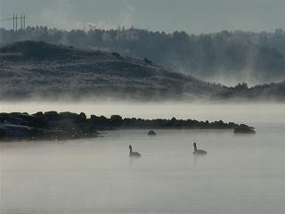
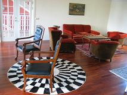
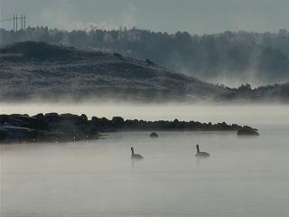
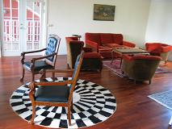
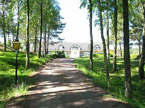
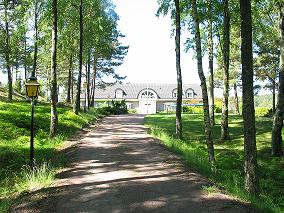

Med en fantastisk utsikt over sjøen, brygga og parken, ligger hovedhuset litt tilbaketrukket. Innendørs finner man11 dobbeltrom og 10 bad, svømmehall med badstue, jacuzzi, biljardrom, dagligstue, bibliotek, stort kjøkken, spisesal hvor det kan dekkes til 40 og en konferansesal med plass til minst det samme. For dem som ønsker å tilbringe tiden utendørs, er det bare noen få skritt til tennisbanen hvis man ikke bare ønsker å nyte stillheten på den 50 mål store eiendommen. Eiendommen ble bygget i 1988 og renovert i 2001.
Huset utgjør en egen enhet, og ble bygget i 2002. Leiligheten strekker seg over to plan med to soverom og bad i første etasje med tillegg av to soverom, stue med åpen kjøkkenløsning og terrasse i andre. Også her nyter man godt av sjøutsikten. Totalt 8 sengeplasser.
 





 

Villa Ekorren
44496 Ødsmål
Tlf : +47 901 37 589
+46 (0)303773060
Mail Her